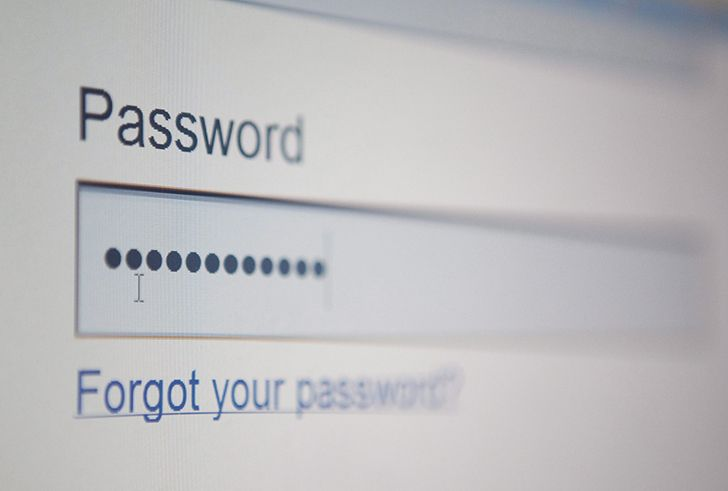

YouTube.com was registered on February 14th, 2005 (Valentine’s day) with the purpose of being a video-dating site.
It was designed as a way for people to upload videos of themselves talking about the partner of their dreams. But after some time when no one was uploading their videos, YouTube changed to allow uploading of any kind of video.
Mark Zuckerberg is red-green colourblind, which means the colour he can see best is blue. This is why the colour blue dominates the Facebook website and mobile app.
'Typewriter' is the longest word you can type on a QWERTY keyboard, using only one of the rows on your keyboard.
The QWERTY keyboard was originally designed to slow you down.
When typewriters were introduced, typing too fast would jam the keys. Using a QWERTY keyboard spaced out commonly used characters to slow typists down and prevent jamming.
More people have mobile phones than toilets.
Out of the 7.7 billion people in the world, more than 6 billion people have access to a mobile phone. Compared to only 4.5 billion people who have access to a working toilet.
an American e-commerce and cloud computing company Amazon.com was earlier known as Cadara.com
Google has 3.8 million searches every minute, and it’s growing.
Every month, hackers release around 6,000 computer viruses.
This number has drastically risen since 1990, at which point there were only 50 known computer viruses.
These days, by 21 you’ll have also sent 250,000 emails and texts, and spent 10,000 hours in a cell phone. That’s a lot of time!
Seniors who are over 50 and use the internet on a regular basis are rare these days. So rare in fact, there’s a term for it – "Silver Surfers."
Technical degrees are almost useless by the time you graduate.
A degree looks good on paper, but in fact, technology is advancing faster than ever. The amount of technical information doubles every two years. So, if you start a four year degree, then half of what you learn by the time you finish will be obsolete.
To a normal human, Google’s first ever tweet on Twitter was nonsense! It reads, “I’m 01100110 01100101 01100101 01101100 01101001 01101110 01100111 00100000 01101100 01110101 01100011 01101011 01111001 00001010”. Translated from binary to English, this tweet says “I’m feeling lucky.”
Yahoo’s original name was a mouthful. The original URL for Yahoo was akebono.standford.edu.
The name Yahoo was selected because it was derived from Gulliver’s Travels slang, “Yahoo” which was a fictional race of beings in the book.
 Alexa is always listening to your conversations. This probably isn’t new to you. Siri has been doing it forever.
Alexa is always listening to your conversations. This probably isn’t new to you. Siri has been doing it forever.
Alexa stores your dialogue history to its cloud to help improve your Alexa experience. But, you can review and delete these recordings, either in bulk, or individually. Your online reputation and privacy worst enemies are WhatsApp, Snapchat, Instagram, Google, Facebook, and Twitter.
You would think the invention of the radio would be a big deal, but it took 38 years for the radio to reach an audience of 50 million.
Back in 1964, Doug Engelbart invented the first ever computer mouse! Back then, it was made out of wood.
It was rectangular and featured a little button on the top right. He called it a mouse because the cord coming out of the back reminded him of the tiny rodents.
In 2010, the United States Air Force used 1,760 PlayStation 3 consoles to build a supercomputer for the Department of Defense.
They used PS3’s because it was more cost efficient and “green.”
There is special Braille technology and accessories for blind people to use cell phones.
It uses special pins that go up and down so the user can touch and read the info.
In 1973, the first ever mobile phone call was made by Martin Cooper, an employee of Motorola, made from the streets of New York City.
It wasn’t until 19 years later when Neil Papworth sent the first SMS message, which brings us onto our next tech fact.
On December 3rd, 1992, a software architect, Sema Group, used a computer to text “Merry Christmas” to a Vodafone employee who was using a Orbitel 901 handset.
These days, over six billion texts are sent per day!
Back in 2006, Qatar Telecom hosted a charity auction where they sold the phone number 666-6666.
It sold for $2.75 million, bought by an anonymous bidder.
Online dating is hugely popular these days, and apparently it seems to work!
40% of couples who got together in 2017 met online. Looking at a larger scale, meeting through friends declined by 13% from 1995 to 2019.
Kids that are on social media for 1 hour a day have less chance of being happy.
This is probably not much of a surprise, but studies have shown that the more time kids spend on social media, the less likely they are to be happy with their overall life by 14%. By comparison, this is three times higher than the effects of living in a single-parent household.
 The three most common passwords are also the weakest.
The top three most used passwords are 123456, password, and 12345. Definitely don’t use any of those next time you need a password change!
An artificial intelligence was created (with 87% accuracy) in determining disease outbreaks, such as dengue fever.
There are hopes to use this tech to predict outbreaks for more serious diseases like Ebola and Zika.
It is estimated that digital technology could reduce global carbon emissions by 20% by 2030.
That’s equal to getting rid of 100% of China’s emissions, plus an additional 1.5 billion tons!
Millions of tons of technology are thrown out each year.
Specifically, 220 million tons of old computers, along with other devices, are thrown away every year in the U.S. alone.
Every minute, 100 hours of video are uploaded on YouTube by individual users.
Ninety percent of text messages are read within three minutes of being delivered.
There are 350 million Snapchat messages sent every day.
Of the 60 billion emails that are sent on a daily basis, 97 percent are considered spam.
Over 3.8 billion people use the internet today, which is 40% of the world’s population.
More than 570 new websites are created every minute.
340,000 tweets are sent per minute.
There are more than 300 million photos uploaded to Facebook every day, 800 million likes per day, and 175 million love reactions per day.
Facebook is a divorce lawyers best friend. In fact, 1 in 7 divorces are blamed on Facebook.
More than 56 million hours of music is streamed daily.
The English word for red panda is ‘Firefox’ which is where the browser gets its name from – this means the Firefox logo is actually a red panda, not a fox!
In 1994, the company who had a patent on GIFs tried to charge a fee for using GIFS.
The PNG was invented as an alternative, and the company backed down.
The word robot comes from the Czech “robota“. This translates into forced labor, or work.
On an average work day, a typist’s fingers travel about 12.6 miles.
On 1st April 2005, NASA pulled a prank telling the world that they had found water on Mars.
If you were to have your picture taken by the very first camera, you’d need to sit still for 8 hours.
Although GPS is free for the world to use, it costs $2 million per day to operate.
The money comes from American tax revenue.
Ubuntu is one of the more popular distributions of Linux.
The word Ubuntu comes from an African word meaning “I am because of you”.
In mobile games, 60% of all revenue came from only 0.23% of players.
When Snapchat launched in 2011, it was named Picaboo, but in 2012, it was renamed to Snapchat.
On eBay, there is an average of $680 worth of transactions every second.
In 1999, PayPal was voted as one of the top ten worst business ideas.
97% of people type in random words on Google, just to see if they spelled it right.
Technophobia is the fear of technology.
Almost One Third Of the world’s population has never made a phone call.
Someone on Twitter who has a million or more followers is known as a “Twillionaire”.
Around the year 1500, Leonardo da Vinci sketched plans for a robot.
A diamond will not dissolve in acid. The only thing that can destroy it is intense heat.
Marie Curie was the first person to win two Nobel Prizes for Science.
Computer programming is currently one of the fastest-growing professions in the technology industry.
25% of mobile apps are gaming apps.
The very first Apple logo featured Sir Isaac Newton sitting underneath a tree, with an apple about to hit his head.
 Way back when people didn’t realize how huge the internet would be, registering a domain name was free until 1995.
Way back when people didn’t realize how huge the internet would be, registering a domain name was free until 1995.
When a fee was introduced, it was high! Prices were typically $100 for two years of registration.  You’re in good hands if your surgeon was a gamer.
You’re in good hands if your surgeon was a gamer.
Surgeons that grew up playing video games more than 3 hours per week make 37% fewer errors! Not only that, but they also had a 42% faster completion rate when it comes to performing laparoscopic surgery, as well as suturing.  The Apple Lisa was the first commercial computer with a Graphical User Interface (GUI) and a mouse.
The Apple Lisa was the first commercial computer with a Graphical User Interface (GUI) and a mouse.
The name “Lisa” stands for “Logical Integrated Software Architecture”. Lisa was also the name of Steve Job’s daughter.